Tracking Time
TrackingTime_max = 15.02
m.TrackingTime.data <- subj_data %>%
select(Participant, Group, ResourceSpeed, SignalingType, TrackingTime) %>%
mutate(TrackingTime_0_1 = (TrackingTime + 0.01) / TrackingTime_max)
head(m.TrackingTime.data)m.TrackingTime.data %>%
ggplot(aes(x = TrackingTime)) +
geom_histogram(binwidth = 1, fill = "lightblue", color = "black") +
facet_grid(rows = vars(ResourceSpeed), cols = vars(SignalingType)) +
theme_nice()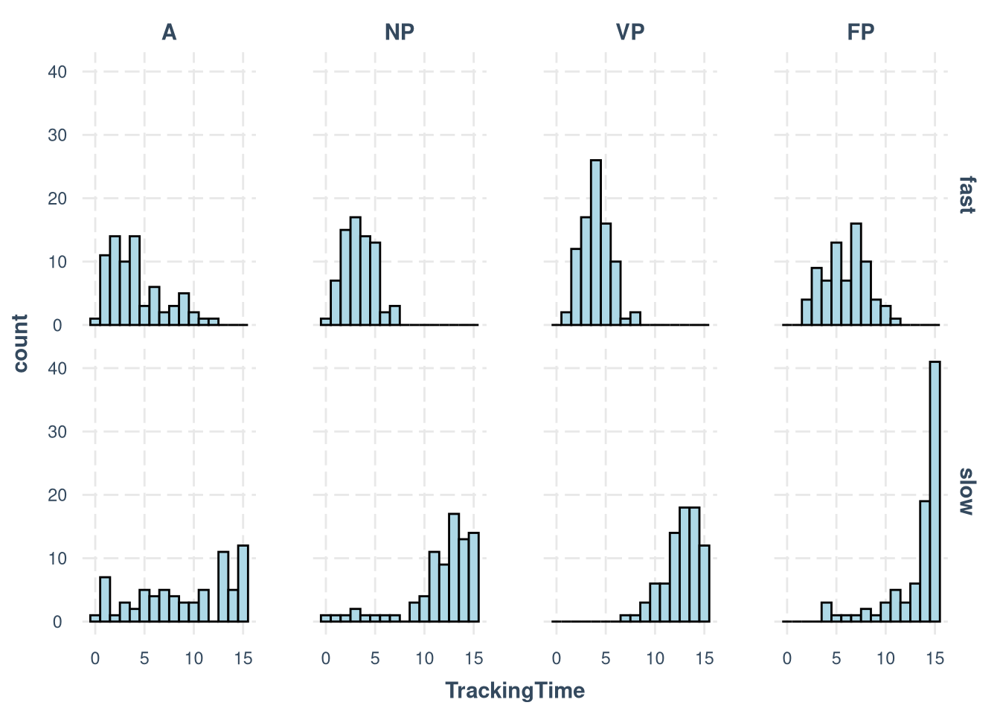
Model 1
m.TrackingTime.1.formula <- brmsformula(
TrackingTime_0_1 ~ 1 + SignalingType * ResourceSpeed + (1 | Group),
family = Beta(link = "logit", link_phi = "log")
)
m.TrackingTime.1.formula_comparison <- brmsformula(
TrackingTime_0_1 ~ 1 + SignalingType * ResourceSpeed
)
m.TrackingTime.1.priors <-
prior(normal(0, 0.5), class = b) +
prior(normal(0, 1), class = Intercept) +
prior(normal(2, 1), class = phi, lb = 0) +
prior(normal(0, 1), class = sd, lb = 0)Prior predictive checks
m.TrackingTime.1.fit_prior <- brm(
formula = m.TrackingTime.1.formula,
data = m.TrackingTime.data,
prior = m.TrackingTime.1.priors,
chains = 4,
cores = 4,
seed = 42,
iter = 2000,
file = paste0(fits_path, 'tracking_time_1_prior.rds'),
sample_prior = "only",
backend = "cmdstanr",
threads = threading(100),
control = list(adapt_delta = 0.95),
save_pars = save_pars(all = TRUE))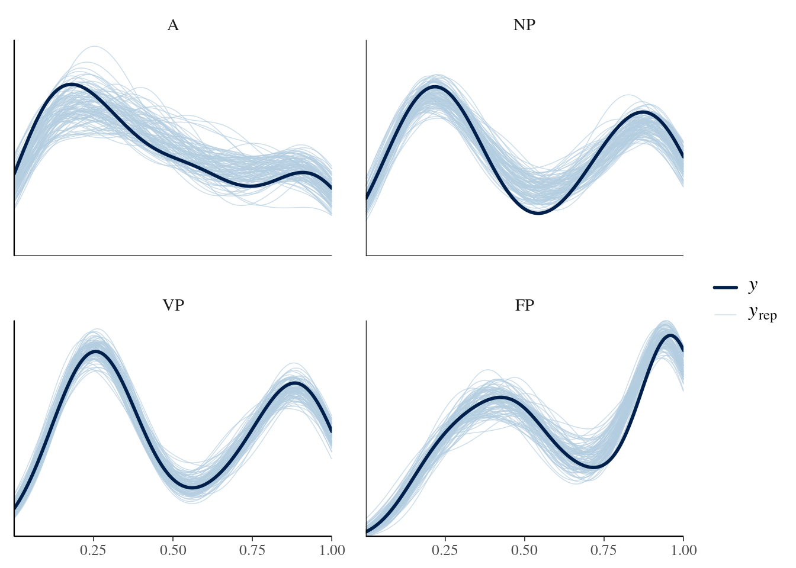
Model fitting
m.TrackingTime.1.fit <- brm(
formula = m.TrackingTime.1.formula,
data = m.TrackingTime.data,
prior = m.TrackingTime.1.priors,
chains = 7,
cores = 7,
seed = 42,
iter = 20000,
file = paste0(fits_path, 'tracking_time_1.rds'),
backend = "cmdstanr",
threads = threading(100),
control = list(adapt_delta = 0.95),
save_pars = save_pars(all = TRUE))## Family: beta
## Links: mu = logit; phi = identity
## Formula: TrackingTime_0_1 ~ 1 + SignalingType * ResourceSpeed + (1 | Group)
## Data: m.TrackingTime.data (Number of observations: 621)
## Draws: 7 chains, each with iter = 20000; warmup = 10000; thin = 1;
## total post-warmup draws = 70000
##
## Multilevel Hyperparameters:
## ~Group (Number of levels: 247)
## Estimate Est.Error l-95% CI u-95% CI Rhat Bulk_ESS Tail_ESS
## sd(Intercept) 1.01 0.07 0.88 1.14 1.00 18644 36287
##
## Regression Coefficients:
## Estimate Est.Error l-95% CI u-95% CI Rhat Bulk_ESS Tail_ESS
## Intercept -1.03 0.12 -1.27 -0.78 1.00 25349 41522
## SignalingTypeNP -0.02 0.24 -0.48 0.45 1.00 14213 27623
## SignalingTypeVP 0.16 0.22 -0.28 0.59 1.00 13255 27315
## SignalingTypeFP 0.61 0.23 0.17 1.07 1.00 14283 29073
## ResourceSpeedslow 1.71 0.17 1.39 2.04 1.00 23423 37533
## SignalingTypeNP:ResourceSpeedslow 0.57 0.31 -0.03 1.17 1.00 16182 29741
## SignalingTypeVP:ResourceSpeedslow 0.69 0.30 0.10 1.28 1.00 16924 30485
## SignalingTypeFP:ResourceSpeedslow 0.68 0.30 0.10 1.27 1.00 17194 31172
##
## Further Distributional Parameters:
## Estimate Est.Error l-95% CI u-95% CI Rhat Bulk_ESS Tail_ESS
## phi 9.87 0.60 8.70 11.07 1.00 40615 50243
##
## Draws were sampled using sample(hmc). For each parameter, Bulk_ESS
## and Tail_ESS are effective sample size measures, and Rhat is the potential
## scale reduction factor on split chains (at convergence, Rhat = 1).Model diagnostics
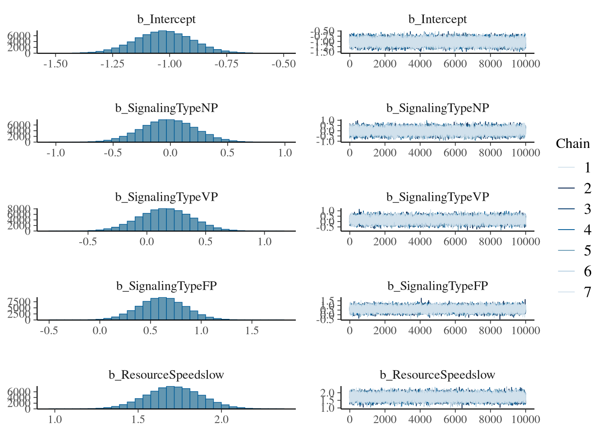
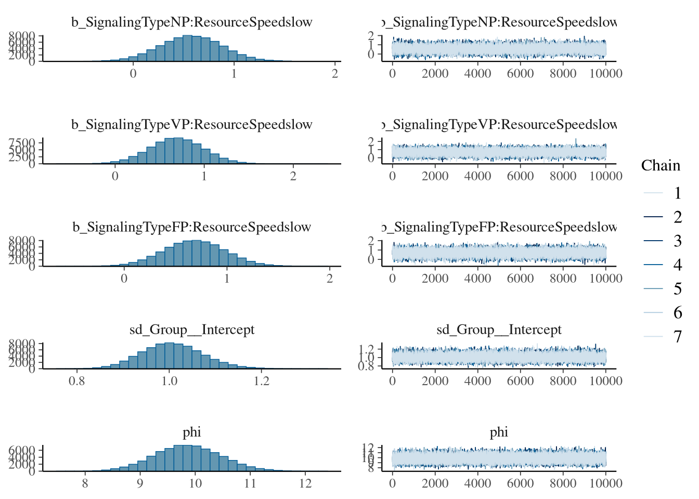
m.TrackingTime.1.y = m.TrackingTime.data$TrackingTime_0_1
m.TrackingTime.1.yrep = posterior_predict(m.TrackingTime.1.fit, draws = 1000)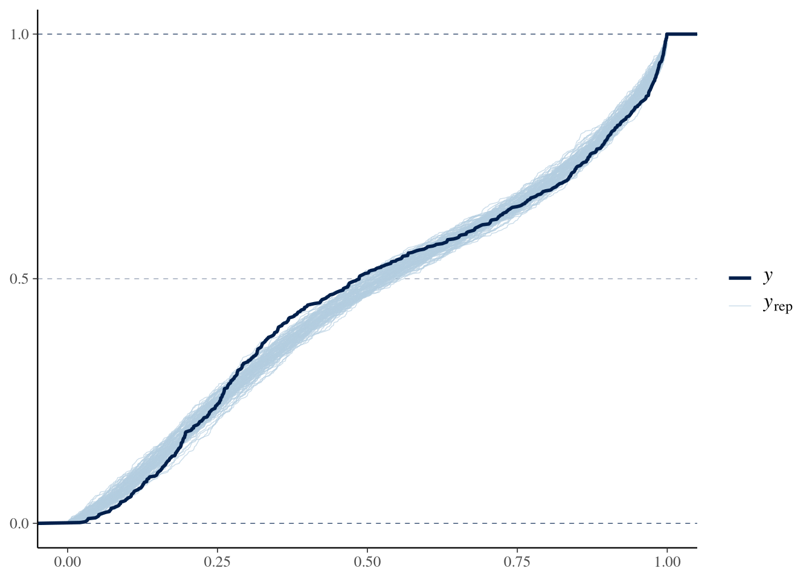
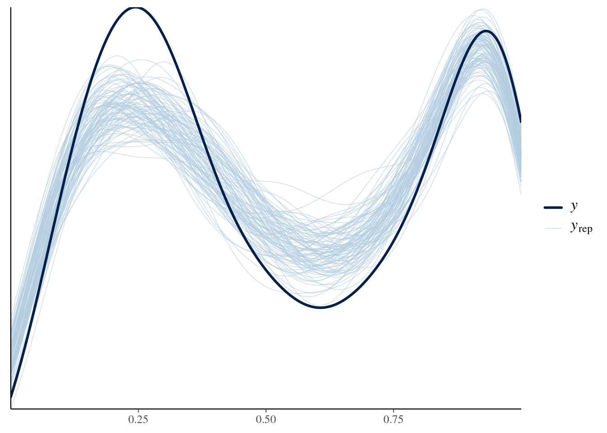
ppc_dens_overlay_grouped(m.TrackingTime.1.y, m.TrackingTime.1.yrep[1:100, ],
group = m.TrackingTime.data$ResourceSpeed)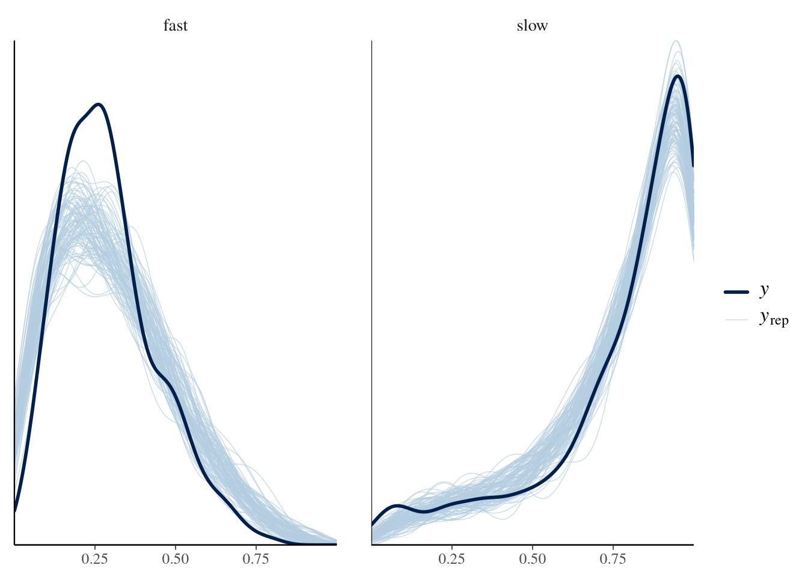
ppc_dens_overlay_grouped(m.TrackingTime.1.y,
m.TrackingTime.1.yrep[1:100, ],
group = m.TrackingTime.data$SignalingType)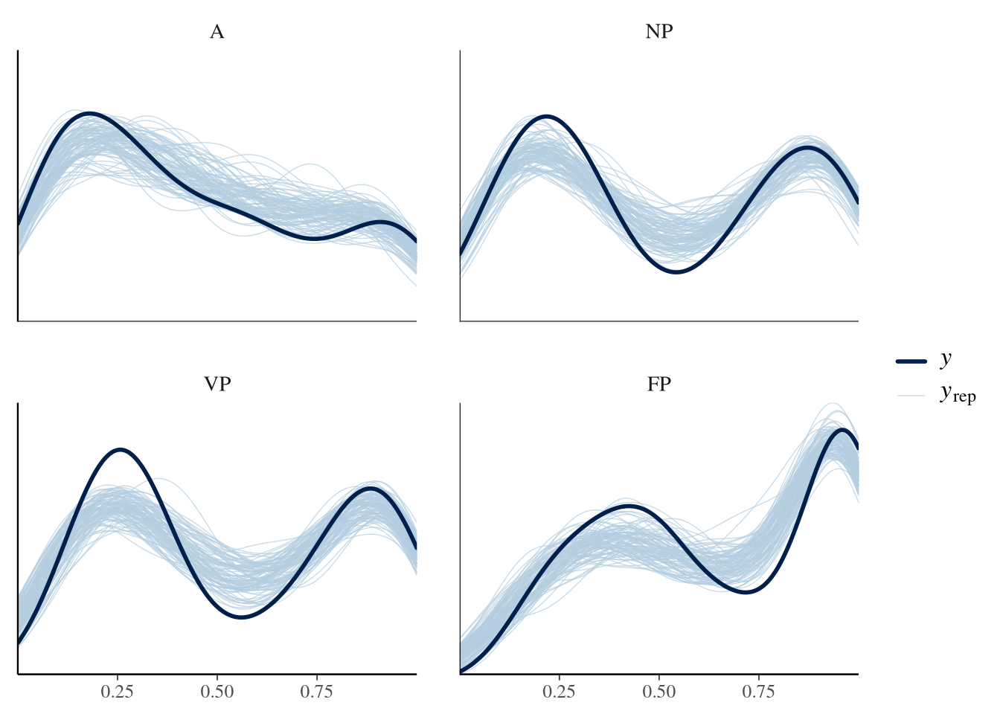
group <- m.TrackingTime.data$SignalingType
mask <- m.TrackingTime.data$ResourceSpeed == 'fast'
ppc_dens_overlay_grouped(m.TrackingTime.1.y[mask],
m.TrackingTime.1.yrep[1:50, mask],
group = group[mask])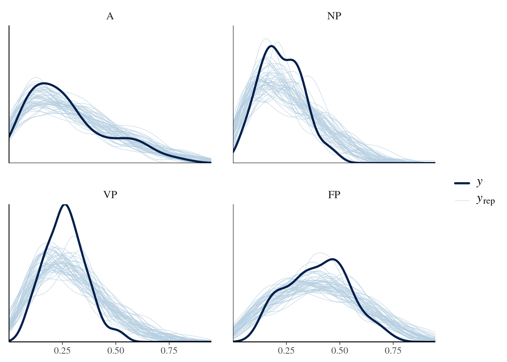
group <- m.TrackingTime.data$SignalingType
mask <- m.TrackingTime.data$ResourceSpeed == 'slow'
ppc_dens_overlay_grouped(m.TrackingTime.1.y[mask],
m.TrackingTime.1.yrep[1:50, mask],
group = group[mask])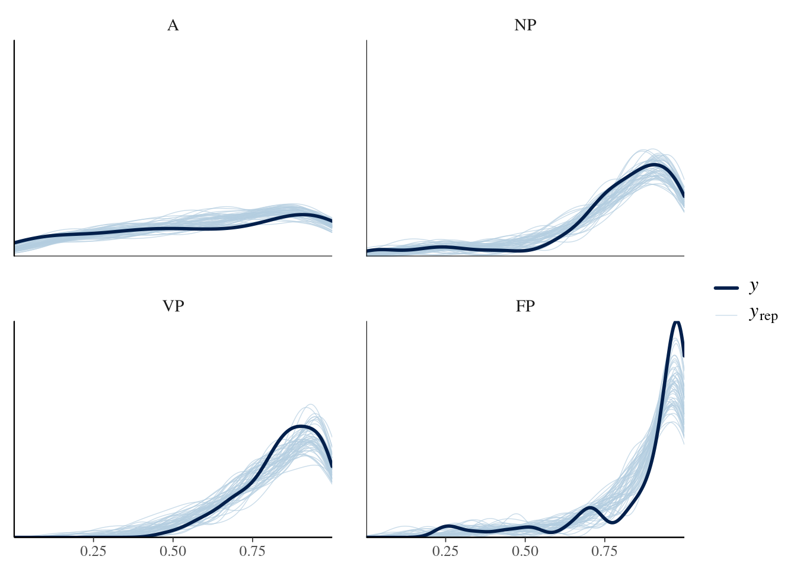
Condition comparisons
m.TrackingTime.1.emmeans_contrast_draws.1 <- m.TrackingTime.1.fit %>%
emmeans(~ SignalingType * ResourceSpeed, epred = TRUE, type = "response",
re_formula = m.TrackingTime.1.formula_comparison) %>%
contrast(method = "revpairwise", simple = "each", combine = TRUE) %>%
gather_emmeans_draws() %>%
mutate(.value = .value * TrackingTime_max)m.TrackingTime.1.comparison.1 <- m.TrackingTime.1.emmeans_contrast_draws.1 %>%
ggdist::mean_hdci(.width = 0.9) %>%
mutate(.value = round(.value, 2), .lower = round(.lower, 2), .upper = round(.upper, 2))
m.TrackingTime.1.comparison.1 %>%
knitr::kable("html", digits = 2) %>% kable_classic(full_width = T, position = "center", )| ResourceSpeed | SignalingType | contrast | .value | .lower | .upper | .width | .point | .interval |
|---|---|---|---|---|---|---|---|---|
| . | A | slow - fast | 6.01 | 5.18 | 6.88 | 0.9 | mean | hdci |
| . | FP | slow - fast | 7.17 | 5.88 | 8.48 | 0.9 | mean | hdci |
| . | NP | slow - fast | 7.68 | 6.36 | 9.03 | 0.9 | mean | hdci |
| . | VP | slow - fast | 7.85 | 6.59 | 9.11 | 0.9 | mean | hdci |
| fast | . | FP - A | 2.03 | 0.73 | 3.32 | 0.9 | mean | hdci |
| fast | . | FP - NP | 2.06 | 0.44 | 3.68 | 0.9 | mean | hdci |
| fast | . | FP - VP | 1.54 | -0.06 | 3.17 | 0.9 | mean | hdci |
| fast | . | NP - A | -0.03 | -1.19 | 1.06 | 0.9 | mean | hdci |
| fast | . | VP - A | 0.49 | -0.65 | 1.61 | 0.9 | mean | hdci |
| fast | . | VP - NP | 0.52 | -0.98 | 1.99 | 0.9 | mean | hdci |
| slow | . | FP - A | 3.19 | 2.28 | 4.09 | 0.9 | mean | hdci |
| slow | . | FP - NP | 1.55 | 0.37 | 2.73 | 0.9 | mean | hdci |
| slow | . | FP - VP | 0.86 | -0.19 | 1.90 | 0.9 | mean | hdci |
| slow | . | NP - A | 1.64 | 0.43 | 2.81 | 0.9 | mean | hdci |
| slow | . | VP - A | 2.33 | 1.25 | 3.39 | 0.9 | mean | hdci |
| slow | . | VP - NP | 0.69 | -0.62 | 2.02 | 0.9 | mean | hdci |
m.TrackingTime.1.emmeans_contrast_draws.1 %>%
filter(ResourceSpeed != '.') %>%
rename(prediction = .value) %>%
ggplot(
aes(y = contrast,
x = prediction,
color = ResourceSpeed, shape = ResourceSpeed, fill = ResourceSpeed)) +
facet_grid(rows = vars(ResourceSpeed)) +
stat_pointinterval(.width = 0.9) +
scale_color_manual(values = get_colors("Qual2", num.colors = 2, reverse = TRUE, gradient = FALSE)) +
scale_fill_manual(values = get_colors("Qual2", num.colors = 2, reverse = TRUE, gradient = FALSE)) +
scale_shape_manual(values = c(21, 24)) +
geom_vline(aes(xintercept=0), linetype="longdash") +
labs(x = 'Prediction Tracking Time') +
theme_nice()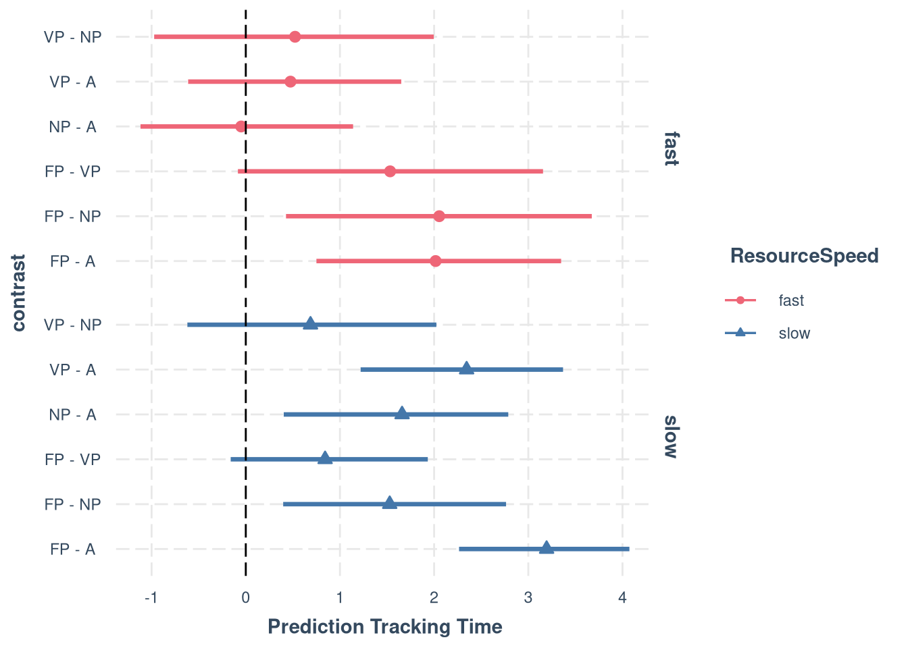
m.TrackingTime.1.emmeans_contrast_draws.2 <- m.TrackingTime.1.fit %>%
emmeans(~ ResourceSpeed, epred = TRUE, type = "response",
re_formula = m.TrackingTime.1.formula_comparison) %>%
contrast(method = "revpairwise", simple = "each", combine = TRUE) %>%
gather_emmeans_draws() %>%
mutate(.value = .value * TrackingTime_max)m.TrackingTime.1.comparison.2 <- m.TrackingTime.1.emmeans_contrast_draws.2 %>%
ggdist::mean_hdci(.width = 0.9) %>%
mutate(.value = round(.value, 2), .lower = round(.lower, 2), .upper = round(.upper, 2))
m.TrackingTime.1.comparison.2 %>%
knitr::kable("html", digits = 2) %>% kable_classic(full_width = T, position = "center", )| contrast | .value | .lower | .upper | .width | .point | .interval |
|---|---|---|---|---|---|---|
| slow - fast | 7.18 | 6.48 | 7.88 | 0.9 | mean | hdci |
Model 2
m.TrackingTime.2.formula <- brmsformula(
TrackingTime_0_1 ~ 1 + SignalingType * ResourceSpeed + (1 | Group),
phi ~ ResourceSpeed + SignalingType,
family = Beta(link = "logit", link_phi = "log")
)
m.TrackingTime.2.formula_comparison <- brmsformula(
TrackingTime_0_1 ~ 1 + SignalingType * ResourceSpeed,
phi ~ ResourceSpeed + SignalingType
)
m.TrackingTime.2.priors <-
prior(normal(0, 0.5), class = b) +
prior(normal(0, 1), class = Intercept) +
prior(gamma(4, 0.1), class = Intercept, dpar = phi, lb = 0) +
prior(normal(0, 1), class = b, dpar = phi) +
prior(normal(0, 1), class = sd, lb = 0)Prior predictive checks
m.TrackingTime.2.fit_prior <- brm(
formula = m.TrackingTime.2.formula,
data = m.TrackingTime.data,
prior = m.TrackingTime.2.priors,
chains = 4,
cores = 4,
seed = 42,
iter = 2000,
file = paste0(fits_path, 'tracking_time_2_prior.rds'),
sample_prior = "only",
backend = "cmdstanr",
threads = threading(100),
control = list(adapt_delta = 0.95),
save_pars = save_pars(all = TRUE))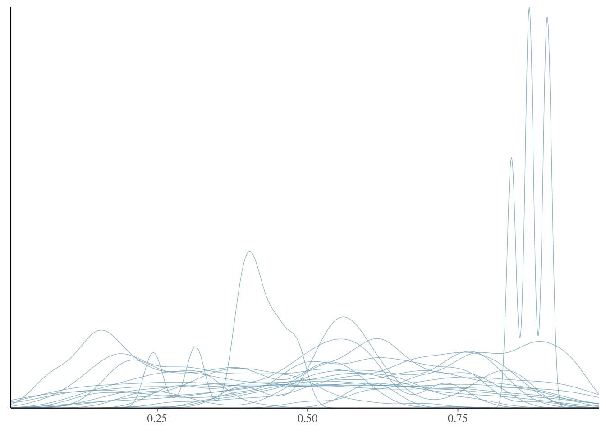
Model fitting
m.TrackingTime.2.fit <- brm(
formula = m.TrackingTime.2.formula,
data = m.TrackingTime.data,
prior = m.TrackingTime.2.priors,
chains = 7,
cores = 7,
seed = 42,
iter = 20000,
file = paste0(fits_path, 'tracking_time_2.rds'),
backend = "cmdstanr",
threads = threading(100),
control = list(adapt_delta = 0.95),
save_pars = save_pars(all = TRUE))## Family: beta
## Links: mu = logit; phi = log
## Formula: TrackingTime_0_1 ~ 1 + SignalingType * ResourceSpeed + (1 | Group)
## phi ~ ResourceSpeed + SignalingType
## Data: m.TrackingTime.data (Number of observations: 621)
## Draws: 7 chains, each with iter = 20000; warmup = 10000; thin = 1;
## total post-warmup draws = 70000
##
## Multilevel Hyperparameters:
## ~Group (Number of levels: 247)
## Estimate Est.Error l-95% CI u-95% CI Rhat Bulk_ESS Tail_ESS
## sd(Intercept) 0.74 0.07 0.62 0.88 1.00 9781 18119
##
## Regression Coefficients:
## Estimate Est.Error l-95% CI u-95% CI Rhat Bulk_ESS Tail_ESS
## Intercept -1.04 0.11 -1.25 -0.83 1.00 28377 44434
## phi_Intercept 2.18 0.19 1.82 2.57 1.00 12844 18648
## SignalingTypeNP -0.13 0.20 -0.51 0.26 1.00 12104 24385
## SignalingTypeVP 0.08 0.18 -0.28 0.44 1.00 8543 18051
## SignalingTypeFP 0.61 0.19 0.25 0.98 1.00 9374 19872
## ResourceSpeedslow 1.70 0.16 1.39 2.01 1.00 26174 38859
## SignalingTypeNP:ResourceSpeedslow 0.68 0.27 0.15 1.20 1.00 16886 29724
## SignalingTypeVP:ResourceSpeedslow 0.91 0.26 0.40 1.43 1.00 12383 24833
## SignalingTypeFP:ResourceSpeedslow 0.83 0.26 0.31 1.34 1.00 14513 27868
## phi_ResourceSpeedslow -1.22 0.14 -1.51 -0.94 1.00 40924 51355
## phi_SignalingTypeNP 1.03 0.21 0.61 1.42 1.00 17795 26781
## phi_SignalingTypeVP 1.69 0.21 1.26 2.10 1.00 16410 24490
## phi_SignalingTypeFP 1.57 0.21 1.14 1.96 1.00 17664 25951
##
## Draws were sampled using sample(hmc). For each parameter, Bulk_ESS
## and Tail_ESS are effective sample size measures, and Rhat is the potential
## scale reduction factor on split chains (at convergence, Rhat = 1).Model diagnostics
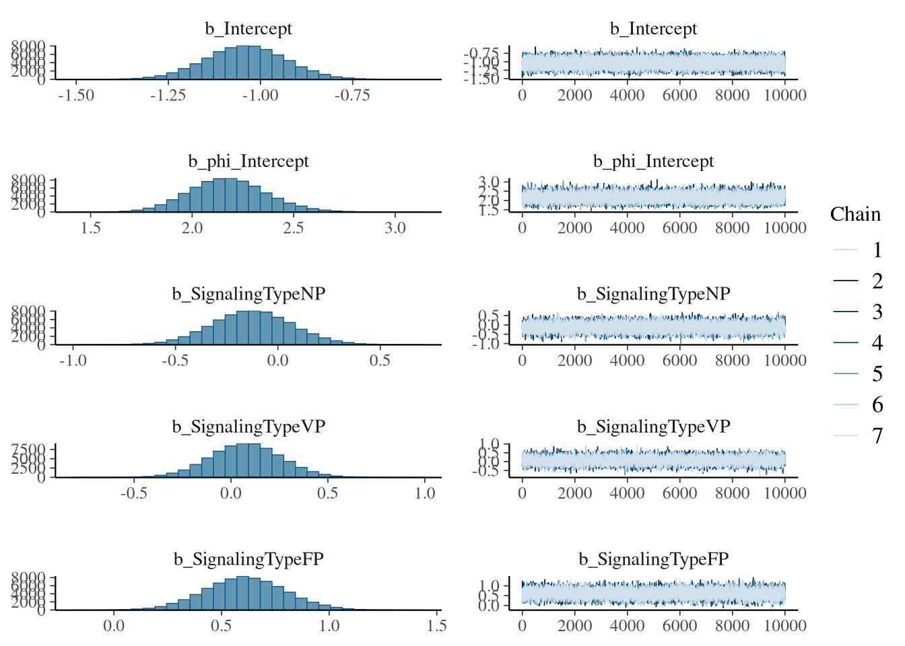
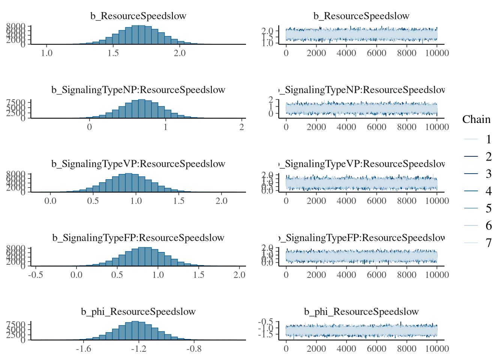
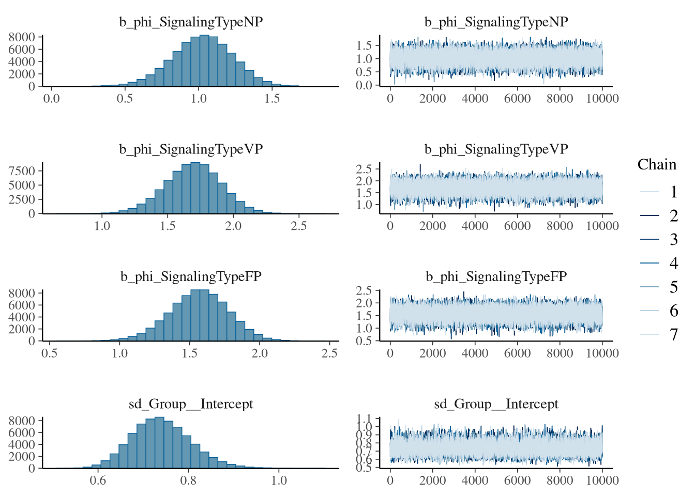
m.TrackingTime.2.y = m.TrackingTime.data$TrackingTime_0_1
m.TrackingTime.2.yrep = posterior_predict(m.TrackingTime.2.fit, draws = 1000)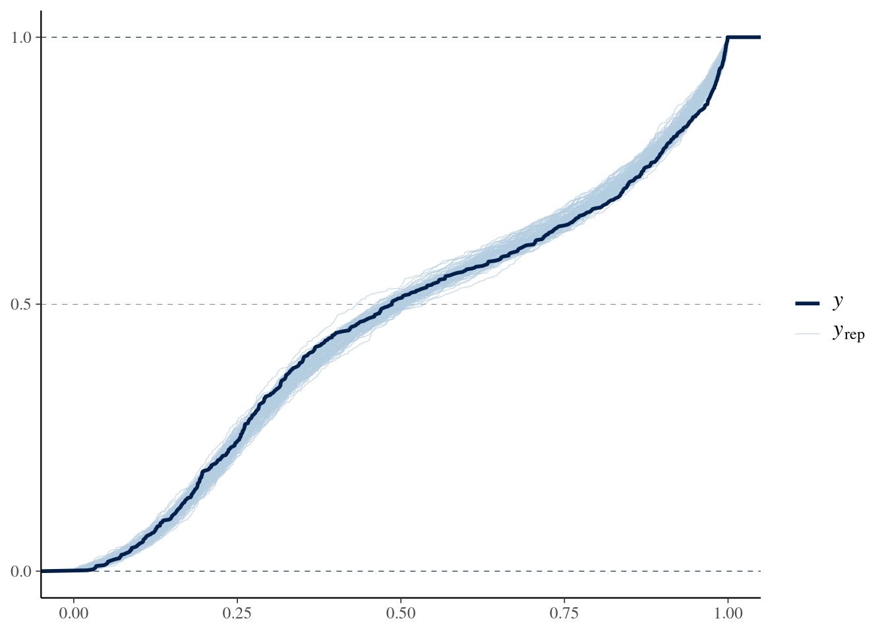
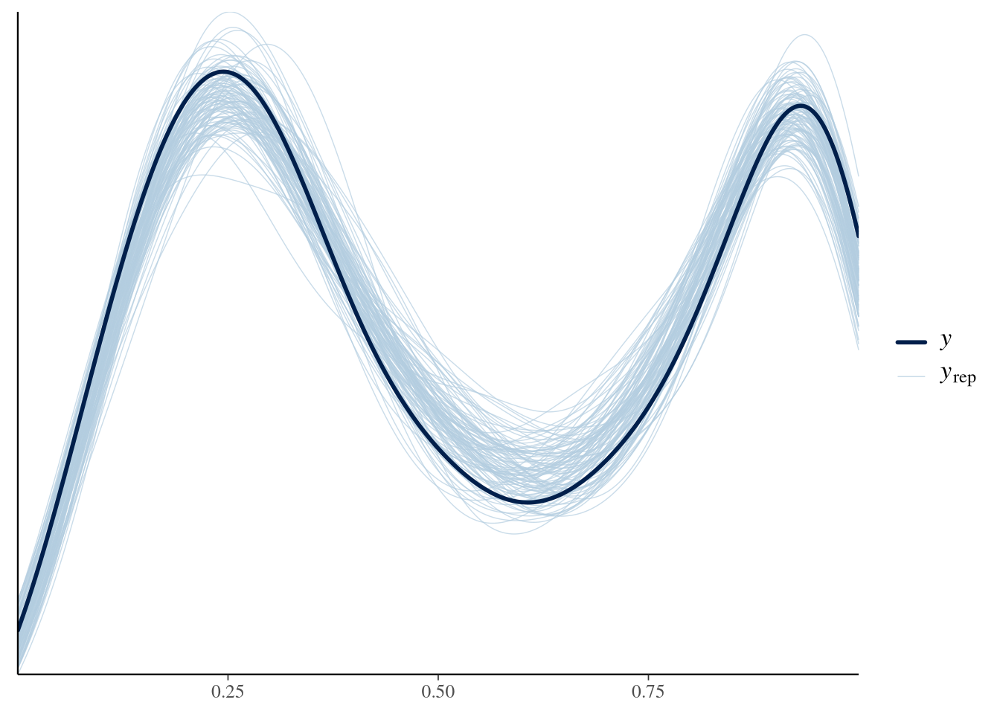
ppc_dens_overlay_grouped(m.TrackingTime.2.y, m.TrackingTime.2.yrep[1:100, ],
group = m.TrackingTime.data$ResourceSpeed)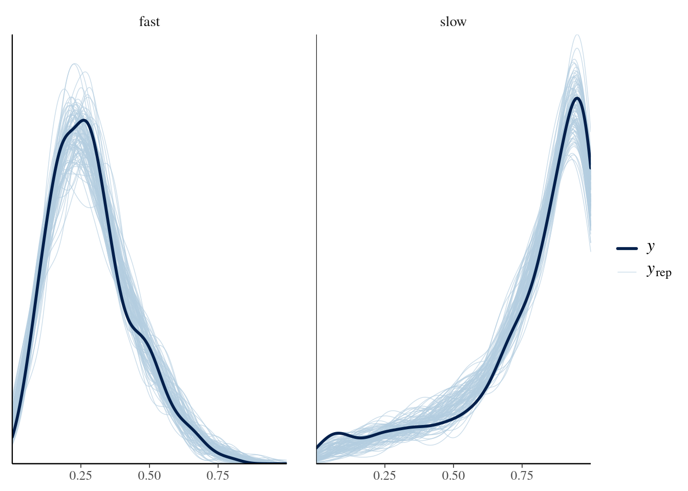
ppc_dens_overlay_grouped(m.TrackingTime.2.y,
m.TrackingTime.2.yrep[1:100, ],
group = m.TrackingTime.data$SignalingType)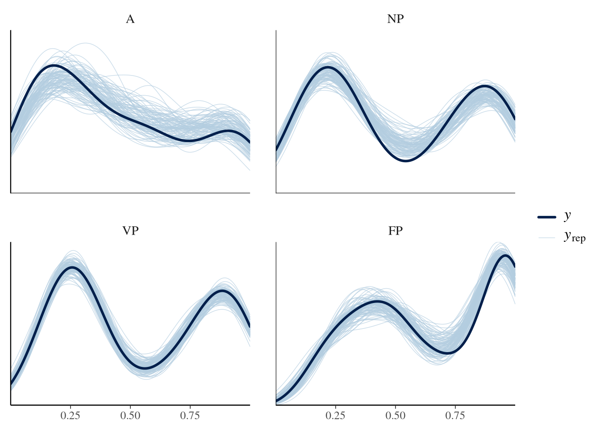
group <- m.TrackingTime.data$SignalingType
mask <- m.TrackingTime.data$ResourceSpeed == 'fast'
ppc_dens_overlay_grouped(m.TrackingTime.2.y[mask],
m.TrackingTime.2.yrep[1:50, mask],
group = group[mask])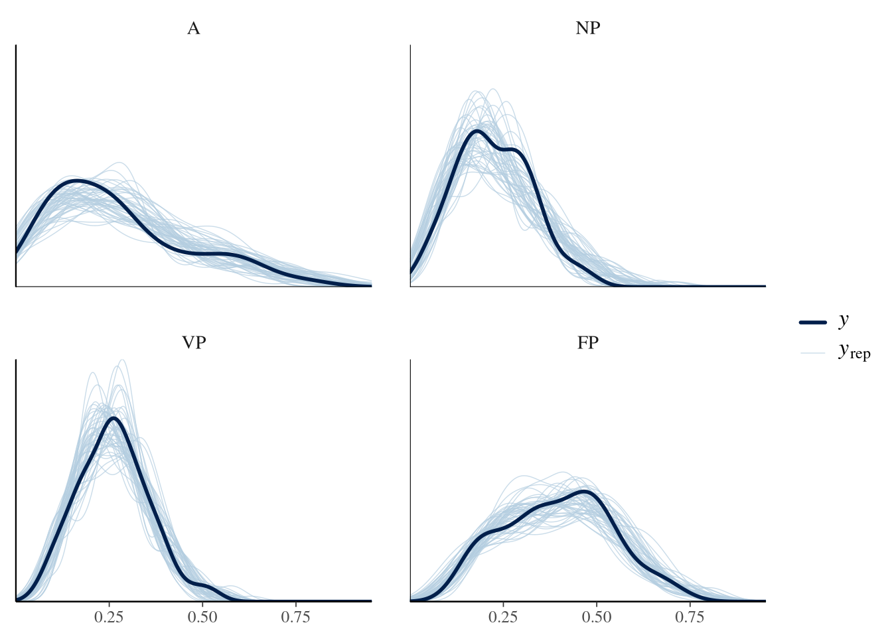
group <- m.TrackingTime.data$SignalingType
mask <- m.TrackingTime.data$ResourceSpeed == 'slow'
ppc_dens_overlay_grouped(m.TrackingTime.2.y[mask],
m.TrackingTime.2.yrep[1:50, mask],
group = group[mask])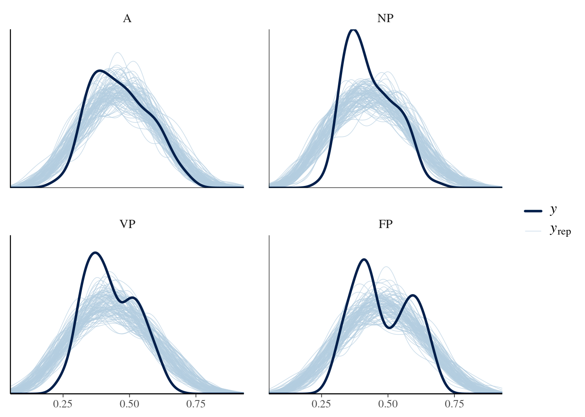
Condition comparisons
m.TrackingTime.2.emmeans_contrast_draws.1 <- m.TrackingTime.2.fit %>%
emmeans(~ SignalingType * ResourceSpeed, epred = TRUE, type = "response",
re_formula = m.TrackingTime.2.formula_comparison) %>%
contrast(method = "revpairwise", simple = "each", combine = TRUE) %>%
gather_emmeans_draws() %>%
mutate(.value = .value * TrackingTime_max)m.TrackingTime.2.comparison.1 <- m.TrackingTime.2.emmeans_contrast_draws.1 %>%
ggdist::mean_hdci(.width = 0.9) %>%
mutate(.value = round(.value, 2), .lower = round(.lower, 2), .upper = round(.upper, 2))
m.TrackingTime.2.comparison.1 %>%
knitr::kable("html", digits = 2) %>% kable_classic(full_width = T, position = "center", )| ResourceSpeed | SignalingType | contrast | .value | .lower | .upper | .width | .point | .interval |
|---|---|---|---|---|---|---|---|---|
| . | A | slow - fast | 5.96 | 5.13 | 6.80 | 0.9 | mean | hdci |
| . | FP | slow - fast | 7.43 | 6.40 | 8.44 | 0.9 | mean | hdci |
| . | NP | slow - fast | 7.97 | 6.86 | 9.03 | 0.9 | mean | hdci |
| . | VP | slow - fast | 8.41 | 7.47 | 9.39 | 0.9 | mean | hdci |
| fast | . | FP - A | 2.00 | 0.96 | 3.04 | 0.9 | mean | hdci |
| fast | . | FP - NP | 2.33 | 1.07 | 3.55 | 0.9 | mean | hdci |
| fast | . | FP - VP | 1.76 | 0.56 | 3.01 | 0.9 | mean | hdci |
| fast | . | NP - A | -0.34 | -1.22 | 0.56 | 0.9 | mean | hdci |
| fast | . | VP - A | 0.23 | -0.66 | 1.13 | 0.9 | mean | hdci |
| fast | . | VP - NP | 0.57 | -0.52 | 1.68 | 0.9 | mean | hdci |
| slow | . | FP - A | 3.47 | 2.63 | 4.32 | 0.9 | mean | hdci |
| slow | . | FP - NP | 1.80 | 0.84 | 2.74 | 0.9 | mean | hdci |
| slow | . | FP - VP | 0.78 | 0.01 | 1.56 | 0.9 | mean | hdci |
| slow | . | NP - A | 1.67 | 0.56 | 2.71 | 0.9 | mean | hdci |
| slow | . | VP - A | 2.68 | 1.75 | 3.63 | 0.9 | mean | hdci |
| slow | . | VP - NP | 1.01 | -0.03 | 2.05 | 0.9 | mean | hdci |
m.TrackingTime.2.emmeans_contrast_draws.1 %>%
filter(ResourceSpeed != '.') %>%
rename(prediction = .value) %>%
ggplot(
aes(y = contrast,
x = prediction,
color = ResourceSpeed, shape = ResourceSpeed, fill = ResourceSpeed)) +
facet_grid(rows = vars(ResourceSpeed)) +
stat_pointinterval(.width = 0.9) +
scale_color_manual(values = get_colors("Qual2", num.colors = 2, reverse = TRUE, gradient = FALSE)) +
scale_fill_manual(values = get_colors("Qual2", num.colors = 2, reverse = TRUE, gradient = FALSE)) +
scale_shape_manual(values = c(21, 24)) +
geom_vline(aes(xintercept=0), linetype="longdash") +
labs(x = 'Prediction Tracking Time') +
theme_nice()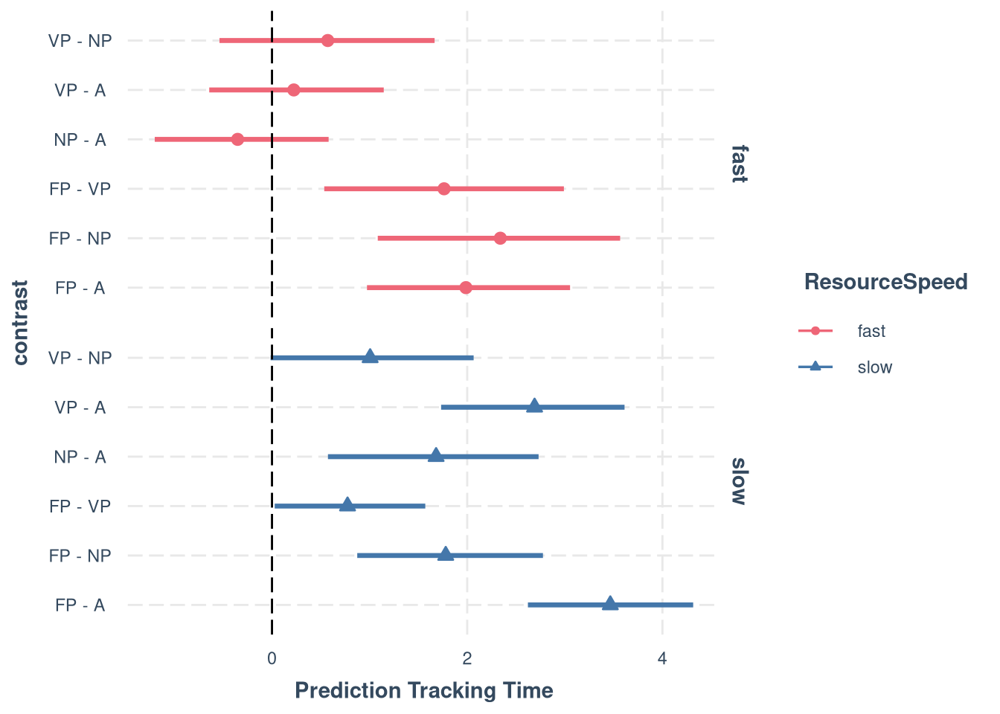
m.TrackingTime.2.emmeans_contrast_draws.2 <- m.TrackingTime.2.fit %>%
emmeans(~ ResourceSpeed, epred = TRUE, type = "response",
re_formula = m.TrackingTime.2.formula_comparison) %>%
contrast(method = "revpairwise", simple = "each", combine = TRUE) %>%
gather_emmeans_draws() %>%
mutate(.value = .value * TrackingTime_max)m.TrackingTime.2.comparison.2 <- m.TrackingTime.2.emmeans_contrast_draws.2 %>%
ggdist::mean_hdci(.width = 0.9) %>%
mutate(.value = round(.value, 2), .lower = round(.lower, 2), .upper = round(.upper, 2))
m.TrackingTime.2.comparison.2 %>%
knitr::kable("html", digits = 2) %>% kable_classic(full_width = T, position = "center", )| contrast | .value | .lower | .upper | .width | .point | .interval |
|---|---|---|---|---|---|---|
| slow - fast | 7.44 | 6.89 | 8 | 0.9 | mean | hdci |
m.TrackingTime.2.comparison.combined_table <- bind_rows(
m.TrackingTime.2.comparison.2,
m.TrackingTime.2.comparison.1
) %>%
select(ResourceSpeed, SignalingType, contrast, .value, .lower, .upper) %>%
mutate(
ResourceSpeed = ifelse(is.na(ResourceSpeed), ".", as.character(ResourceSpeed)),
SignalingType = ifelse(is.na(SignalingType), ".", as.character(SignalingType)),
sig = (.lower * .upper) > 0,
Estimate = sprintf("%.2f", .value),
Estimate = ifelse(sig, paste0("\\textbf{", Estimate, "}"), Estimate),
hpdi = sprintf("[%.2f, %.2f]", .lower, .upper),
hpdi = ifelse(sig, paste0("\\textbf{", hpdi, "}"), hpdi)
) %>%
select(ResourceSpeed, SignalingType, contrast, Estimate, hpdi)
# (Optional) Rename columns for publication
colnames(m.TrackingTime.2.comparison.combined_table) <- c(
"Resource Speed", "Payoff Condition", "Contrast", "Mean", "90\\% HPDI"
)
kbl <- kable(
m.TrackingTime.2.comparison.combined_table,
format = "latex",
booktabs = TRUE,
align = c("l", "l", "l", "r", "r"),
caption = "Posterior Estimates Tracking Time",
escape = FALSE
) %>%
kable_styling(latex_options = "hold_position") %>%
row_spec(0, bold = TRUE)
unique_speeds <- unique(m.TrackingTime.2.comparison.combined_table$`Resource Speed`)
start <- 1
for (speed in unique_speeds) {
n_rows <- sum(m.TrackingTime.2.comparison.combined_table$`Resource Speed` == speed)
if (speed != ".") {
kbl <- group_rows(kbl, speed, start, start + n_rows - 1)
}
start <- start + n_rows
}
writeLines(kbl, paste0(comparisons, "tracking_time_2_comparison_combined.tex"))Model Comparison
m.TrackingTime.1.loo_model <- loo(m.TrackingTime.1.fit, moment_match = F, reloo = F, draws = 1000)
m.TrackingTime.2.loo_model <- loo(m.TrackingTime.2.fit, moment_match = F, reloo = F, draws = 1000)##
## Computed from 70000 by 621 log-likelihood matrix.
##
## Estimate SE
## elpd_loo 519.9 23.6
## p_loo 160.5 11.8
## looic -1039.8 47.3
## ------
## MCSE of elpd_loo is NA.
## MCSE and ESS estimates assume MCMC draws (r_eff in [0.4, 2.0]).
##
## Pareto k diagnostic values:
## Count Pct. Min. ESS
## (-Inf, 0.7] (good) 534 86.0% 236
## (0.7, 1] (bad) 76 12.2% <NA>
## (1, Inf) (very bad) 11 1.8% <NA>
## See help('pareto-k-diagnostic') for details.##
## Computed from 70000 by 621 log-likelihood matrix.
##
## Estimate SE
## elpd_loo 594.9 26.9
## p_loo 146.5 9.6
## looic -1189.8 53.7
## ------
## MCSE of elpd_loo is NA.
## MCSE and ESS estimates assume MCMC draws (r_eff in [0.4, 2.1]).
##
## Pareto k diagnostic values:
## Count Pct. Min. ESS
## (-Inf, 0.7] (good) 594 95.7% 1136
## (0.7, 1] (bad) 27 4.3% <NA>
## (1, Inf) (very bad) 0 0.0% <NA>
## See help('pareto-k-diagnostic') for details.## elpd_diff se_diff elpd_loo se_elpd_loo p_loo se_p_loo looic se_looic
## m.TrackingTime.2.fit 0.000 0.000 594.893 26.852 146.481 9.619 -1189.785 53.703
## m.TrackingTime.1.fit -74.983 12.743 519.910 23.640 160.452 11.786 -1039.819 47.281